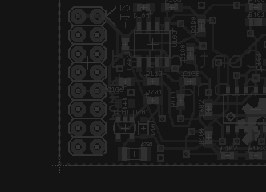

welcome
Here I document personal projects exploring music technology and other forms of technological expression. This page contains links to the three most recent articles.
Eagle Footprints for Eurorack
February 7, 2013

In the course of developing my eurorack modules, I've had to create some custom EAGLE footprints. Here they are under a permissive license!
read more...
Project Log: Eurorack Buffered Multiple
January 27, 2013

I finally finished my first-ever DIY eurorack synthesizer module - the ever-humble buffered multiple.
read more...
Project Log: This Website
October 4, 2012
I auto-generate this site from markdown code using Haskell. The generation code includes a custom CSS processor to output modern, reactive CSS.
read more...